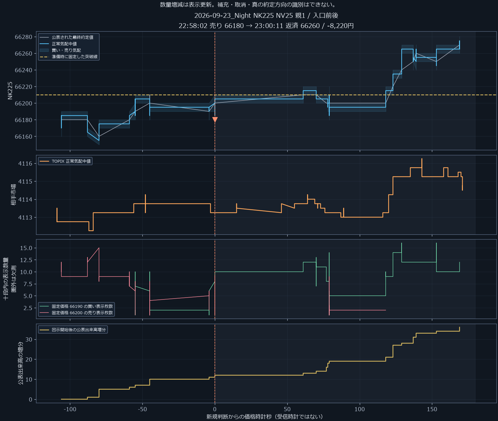
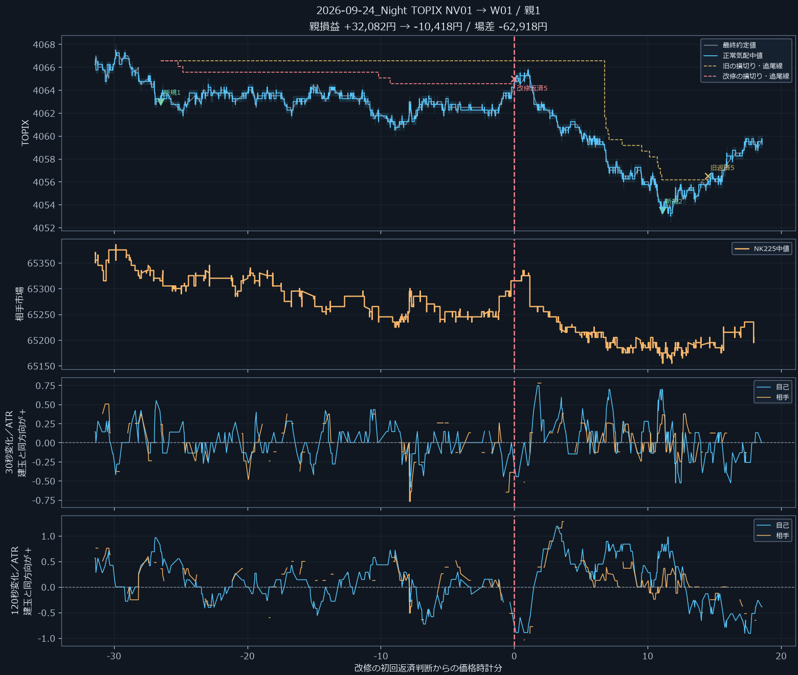
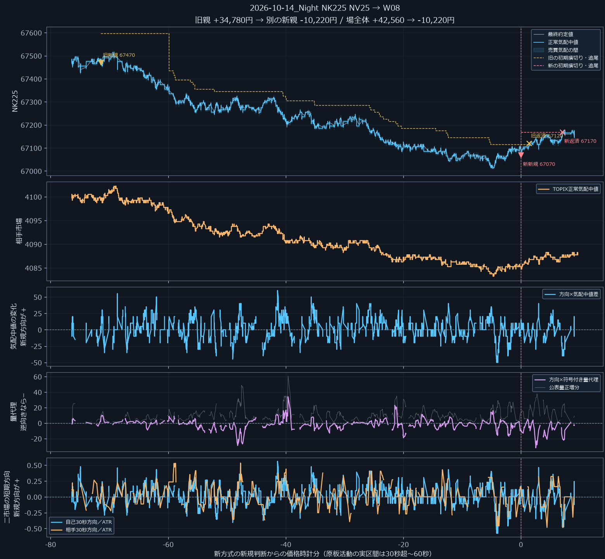

調査一覧夜間のなぜ三段階と改善後の損益
夜間TOPIXには損失を縮める改善候補。日経も含む安定運用は未完成。
W07はTOPIXの最大赤字を53,754円→33,754円へ縮小し、上位3黒字場を除いても+97,894円。ただし黒字場は17→12、無取引は1→6へ変化。日経W12は4取引4勝・+40,120円でも、21場中17場が無取引で、全夜間の安定性を示す結果ではない。
TOPIXミニ5枚／日経マイクロ10枚、新規追加なし。部分返済は2＋3枚／5＋5枚。提示手数料込み、場内全返済。全43場は既知の開発資料で、未知の将来検証ではない。
何が負けを生み、何を直したか
短い順行と、利確を始める幅が一致しない
入口は小さな再進行を確認しても、利益保護を始める幅まで進むかは選別できていなかった。
なぜを三段階と具体時刻で確認
1. 9月23日ナイト日経は22:58:02に66,180売り、23:00:11に66,260返済で−8,220円。返済気配で一度も含み益にならなかった。
2. 固定線への戻りの後、両市場の短い下向きが揃って発注した。これは小さな再下落の観測で、停止幅約70円を上回る下落の確認ではなかった。
3. 板の量や価格の符号を足しても、次の持続性は保証されない。旧取引の勝ちだけを選べたように見えても、見送り後の別の取引で負けが生じた。
出口の保護だけでは、順行がない損失は救えない。入口の活動条件を別に検証した。

早い撤退が、正常な戻りと売り直しで裏目に出る
小損で降りる変更は、回復する取引を切り、その後の不利な入口も生んだ。
なぜを三段階と具体時刻で確認
1. 9月24日ナイトTOPIXは同じ4,063売りから、旧方式+32,082円に対し、早い損失床では−10,418円になった。
2. 2pt順行したため停止線が上がり、元の損切りには届かない戻りで返済した。
3. 空いた建玉枠へ、00:35:03に4,053.5で売り直してさらに−20,418円。場の差−62,918円は、最初の出口差−42,500円と新しい損失の合計だった。
一部返済や両市場の逆行確認も別々に試したが、元の出口を超える共通安定性は得られなかった。

確認を待つ間に、入り場所が悪くなる
板の追加確認が揃うまでに下落が進み、最後の小さな動きで売り始めた。
なぜを三段階と具体時刻で確認
1. 10月14日ナイト日経W08は、翌00:25:30の67,470売り候補を見送り、01:36:57に400円低い67,070で売って−10,220円。
2. 後の入口は追加した板条件を正しく満たした。しかし、最初に見た価格からの悪化を制限していなかった。
3. 最初の候補価格で追随を制限すると、この負けと別の+4,780円の勝ちが消えた。TOPIXでは消える勝ちが大きく、価格制限も万能ではなかった。
W11/W12で価格制限を実装し、全夜間を再生。日経の無敗は4取引に限られ、17無取引を勝ちには数えない。

出口の具体時刻・勝ちを消す反例 入口の原板と観測限界 改修後の再診断
各セッションの利益・損失・収支
初期表示W07はTOPIXでの損失縮小候補。日経W07は上位3黒字場を除くと−36,640円で、両商品への採用確定ではない。W12の日経は4黒字・0赤字・17無取引。 無取引は勝ちに含めない。利益・損失は部分返済と残玉を同じ新規単位へ合算した全費用後の正負。途中だけの利確を勝ちとして数えない。
全条件を比較する（上昇・下落・大勝ち除外）
上昇・下落は採点用の事後分類で、売買判断には使わない。公表時計と原行順の範囲で過去を参照し、約定は判断後の次正常原行のラージ気配で代用。実受信順での二市場情報の同時利用、実ミニ・マイクロ約定、通信遅延は未検証。
仕様・実装・監査 観測と検証の前提 全数値の保存元